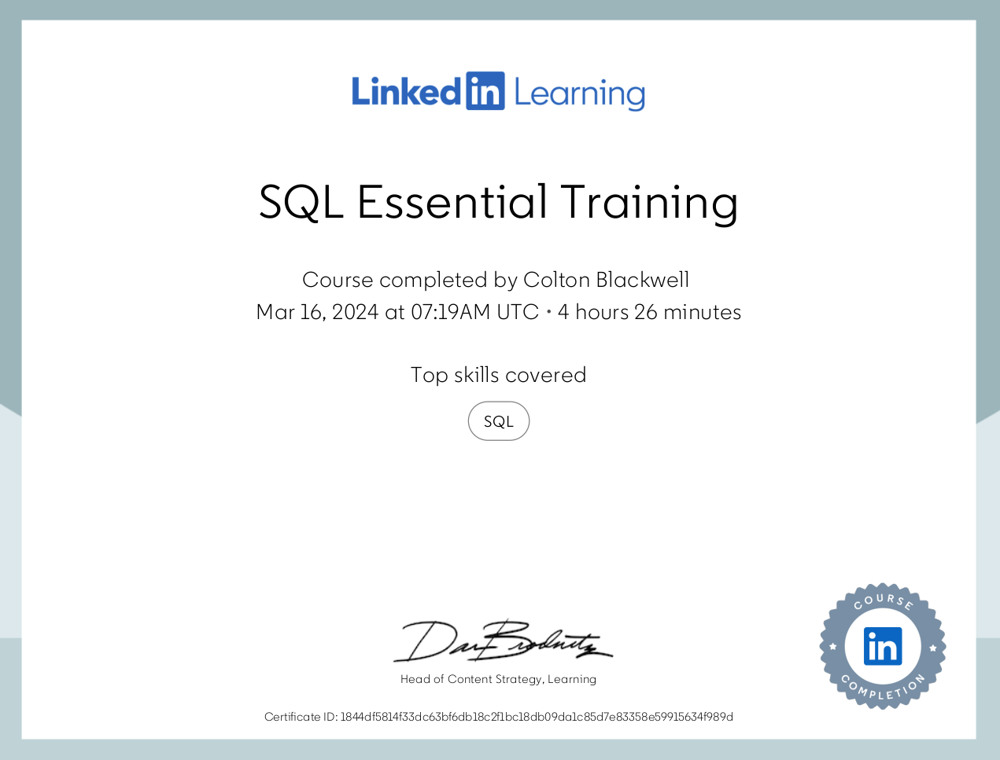
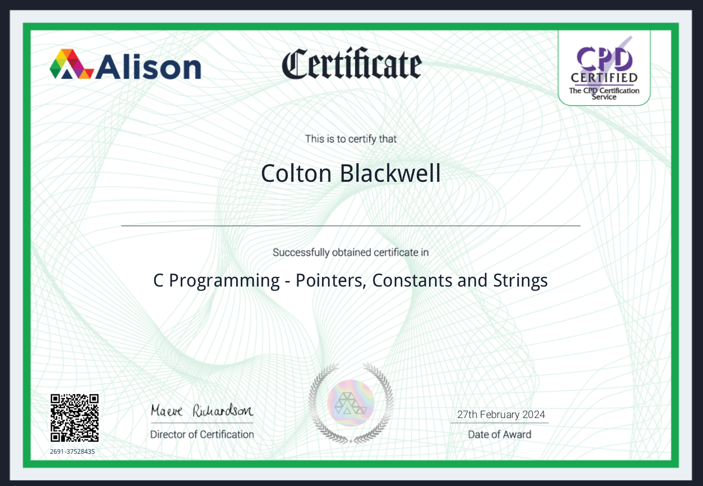
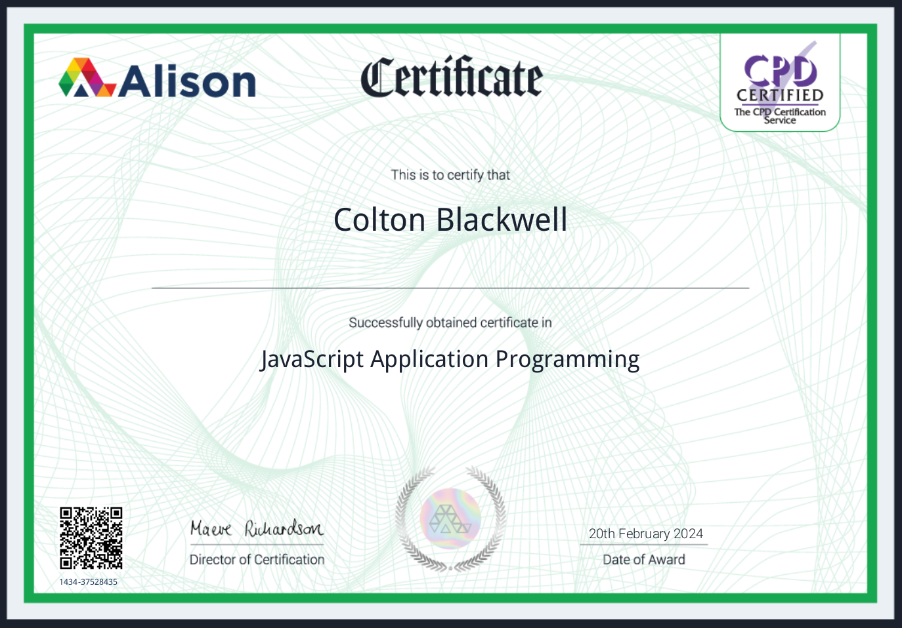

Hi! I'm Colton Blackwell, currently immersed
in my undergraduate studies at Simon Fraser
University. My programming journey began in
North Vancouver during high school, where I delved
into the basics of JavaScript and Java. These
initial courses ignited my passion for programming,
leading me to pursue a Bachelor's of Science at SFU.
My interests include weightlifting, Chess, and Music.
During my university journey, I've acquired extensive
knowledge of data structures and algorithms and
honed my interpersonal skills through my involvement
with UNICEF SFU. Starting from foundational Python
programming in CMPT 125 to delving into advanced
cluster analysis in CMPT 459, I've significantly
expanded my understanding and appreciation for computer
programming. I aspire to pursue a career in technological
programming in the future.
March 2024
LinkedIn - SQL Essential Training

This course explains how to run DB Browser, providing step-by-step instructions on accessing
databases and executing rudimentary queries. It teaches users how to write basic SQL
queries to retrieve specific data from tables and perform simple operations.
Feburary 2024
C Programming - Pointers, Constants and Strings

This course covers pointers in C programming, including direct
memory access, manipulation, memory location changes, multi-byte variables,
memory addresses, char pointers, constants, string literals, and manipulation of data in memory.
Feburary 2024
JavaScript Application Programming

Course that discusses JavaScript functions, function parameters, function arguments, and
anonymous functions. Learned what characters can be contained in a function name and study the
different JavaScript loops. Finally, Studied the two types of scope in JavaScript, and shown
how to use the array object to store multiple values in a single variable.